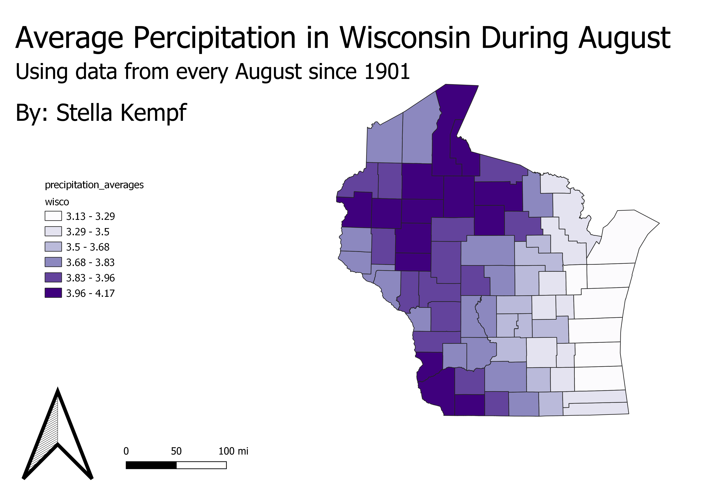

Homework 9: Make a choropleth or proportional symbol map
Stella Kempf
This map is a choropleth map that shows the average precipitation in the state of Wisconsin
every August. The data collected to find this average was taken each August from 1901-2001.
I chose to look at average precipitation because I have always been interested in weather (the
first GEOG course I took at UNC was Weather and Climate). Additionally, I chose the state of
Wisconsin because it seemed to have the most variation according to the NOAA website and I
knew this variation would be helpful when creating a choropleth map. One thing that I found
really interesting about the average precipitation rates was that the counties closest to lake
Michigan recieved the smallest amounts of rainfall during the month of August.

Data used for this project
CSV dataset
Link to geoJSON
Link to website where I found the CSV data